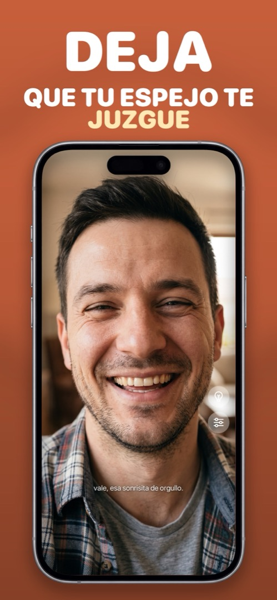

La app de espejo divertida que te juzga (con cariño)
Revisarte la cara es una tarea de cinco segundos que haces una docena de veces al día. Mirrorly la convierte en un chiste de cinco segundos: observa tu expresión y suelta una frase seca. Sigue siendo un espejo de verdad; los chistes son solo el motivo por el que la gente lo vuelve a abrir.
Qué dice en realidad
Mirrorly lee tu expresión con un análisis en el dispositivo y elige un comentario a juego: hay más de cuatrocientos. Ajústate la corbata con cara seria y te dirá «tranquilo, inspector.» Sonríete a ti mismo: «vale, esa sonrisita de orgullo.» Acércate a inspeccionar tus poros: «aléjate, detective de poros.» Ábrela a oscuras: «chica, ¿quién aprobó esta luz?» Vuelve por cuarta vez: «una revisión más. naturalmente.»
El tono es seco, no de payasada: un espejo que lo ha visto todo y está ligeramente poco impresionado, de una forma que te hace reír de estar revisándote el pelo otra vez.
Primero, un espejo de verdad
Los comentarios van sobre un espejo que se toma su trabajo en serio: vista a pantalla completa de la cámara frontal, brillo máximo al abrir, un aro de luz para habitaciones oscuras y zoom para dientes, cejas y lentillas. El humor es la personalidad, no el producto; y si quieres un momento tranquilo con tu reflejo, las Reacciones del espejo se apagan en los ajustes.
Sobre el análisis de la cara
Porque «una app que lee mi cara» es algo de lo que es razonable desconfiar: el análisis se ejecuta por completo en tu iPhone. Nada de tu cara se guarda ni se envía a ningún sitio: ni fotogramas, ni fotos, ni datos faciales. No hay cuenta ni anuncios. Todos los detalles están en la política de privacidad.
Enséñaselo a alguien
Es un buen número en una mesa con amigos: pasa el móvil y deja que el espejo juzgue a todos por turnos. Compartir con amigos envía el enlace de la App Store para que se dejen juzgar en su propio móvil.
Cómo hacerlo en Mirrorly
Para que te juzgue tu propio espejo:
- Instala Mirrorly y ábrela. El espejo está encendido desde el primer momento.
- Pon una cara. La que sea. Lee el comentario en la parte inferior de la pantalla.
- Prueba la bombilla en una habitación oscura y el control de zoom muy de cerca: el espejo tiene algo que decir sobre ambos.
- Usa Compartir con amigos en los ajustes para enviar el enlace de la App Store a quien toque juzgar después.

Mirrorly es gratis para probar en la App Store. Un espejo a pantalla completa para iPhone con aro de luz, zoom y brillo máximo. Tres revisiones gratis y después un pago único: sin suscripción, sin fotos guardadas, sin cuenta, sin anuncios.